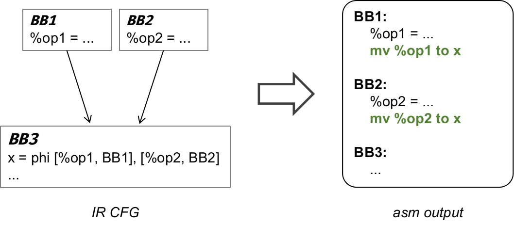
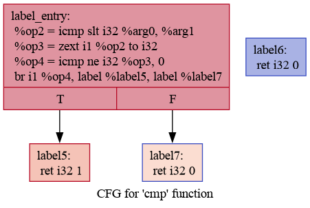

Lab4 Mem2Reg¶
经过前序实验，同学们已经基本完成了一个贯穿从前端到后端的简单编译器，祝贺大家！然而，该编译器生成的代码只能保证语义正确、能在目标机器上运行。接下来，我们将让大家体验如何通过增加优化 pass 让生成的代码快起来。正如课上所讲，优化的方法有很多，由于时间关系，我们不能一一尝试。因此，我们为大家准备了 Mem2Reg 优化实验，在该实验中，同学们将实现这一优化 pass。完成代码后，同学们可以在测试样例中，看到优化前后的性能差距。
Deadline
2023 年 12 月 18 日 23:59
同步实验仓库¶
在进行实验之前，首先拉取实验仓库的最新代码，具体步骤可以参考 Lab2 中的指导。
本次实验仓库更新的内容如下，每个阶段的文件将在对应文档详细说明：
.
├── ...
├── include
│ ├── ...
│ └── passes
| ├── PassManager.hpp # PassManager：管理 pass 的运行
│ ├── FuncInfo.hpp # pass 1：纯函数分析
│ ├── DeadCode.hpp # pass 2：死代码删除
│ ├── Dominators.hpp # pass 3：支配树分析（需要阅读，根据需要修改）
│ └── Mem2Reg.hpp # pass 4：Mem2Reg 分析（需要阅读，根据需要修改）
├── src
│ ├── ...
│ └── passes
│ ├── ...
│ ├── Dominators.cpp <-- 支配树分析实现，需要补全
│ └── Mem2Reg.cpp <-- Mem2Reg 实现，需要补全
└── tests
├── ...
└── 4-mem2reg # Lab4 的本地测试
实验内容¶
阅读与学习¶
-
回顾课上关于支配树的介绍，并阅读 Mem2Reg 介绍，了解 Mem2Reg 的基本原理
支配树的相关算法伪代码可以参考如下文章：Dom.pdf。注意助教在其中的的标柱。
- 阅读 PassManager、FuncInfo 和 DeadCode 的实现，了解如何编写 pass
代码撰写¶
- 补全
src/passes/Dominators.cpp文件，使编译器能够进行正确的支配树分析 - 补全
src/passes/Mem2Reg.cpp文件，使编译器能够正确执行 Mem2Reg - 将 phi 指令转化为 copy statement，令后端可以正确处理 phi 指令
关于 copy statement
什么是 copy statement？
在进行后端翻译时，我们根据 phi 节点的语义，将其转化为前驱块的拷贝操作，如下图所示。

这样做正确吗？
这种 naive 的方案并不完全正确，在个别极端情况下，它会带来 Lost Of Copy 等问题，但是在本次实验中不会出现，所以你可以放心采用这个方案。
本地测试¶
测试脚本¶
tests/4-mem2reg 目录的结构如下：
.
├── functional-cases # 功能测试样例
├── performance-cases # 性能测试样例
├── cleanup.sh
├── eval_lab4.sh # lab4 评测脚本
└── test_perf.sh # 性能比较脚本
其中本地测评脚本 eval_lab4.sh 与 Lab3 一致，使用方法可以回顾 Lab3 测试，要求通过的测例目录：
tests/testcases_generaltests/4-mem2reg/functional-cases
此外，为了让你能够体会 Mem2Reg 的效果，我们还提供了 3 个性能测试样例，在 performance-cases 中。你可以使用脚本 test_perf.sh 来进行性能比较，使用示例如下所示。
test_perf.sh 使用示例
$ ./test_perf.sh
[info] Start testing, using testcase dir: ./performance-cases
==========./performance-cases/const-prop.cminus==========
==========mem2reg off
real 0m13.052s
user 0m13.014s
sys 0m0.009s
==========mem2reg on
real 0m11.929s
user 0m11.905s
sys 0m0.007s
==========./performance-cases/loop.cminus==========
==========mem2reg off
real 0m7.129s
user 0m7.117s
sys 0m0.007s
==========mem2reg on
real 0m5.112s
user 0m5.110s
sys 0m0.000s
==========./performance-cases/transpose.cminus==========
==========mem2reg off
real 0m15.186s
user 0m15.171s
sys 0m0.003s
==========mem2reg on
real 0m10.473s
user 0m10.440s
sys 0m0.007s
IR CFG¶
在实现支配树时，为了方便同学们测试支配树的正确性，本节将向你介绍两个工具：opt 和 dot。opt 和 dot 配合使用可以将 IR 文件转换为 CFG 图片，将基本块之间的关系可视化，利用可视化的 CFG，可以判断生成的支配树是否正确。
在你的机器上，opt 已经随 llvm 一起安装，使用以下命令安装 dot：
$ sudo apt install graphviz
以如下 test.ll 文件为例：
test.ll
define i32 @cmp(i32 %arg0, i32 %arg1) {
label_entry:
%op2 = icmp slt i32 %arg0, %arg1
%op3 = zext i1 %op2 to i32
%op4 = icmp ne i32 %op3, 0
br i1 %op4, label %label5, label %label7
label5: ; preds = %label_entry
ret i32 1
label6:
ret i32 0
label7: ; preds = %label_entry
ret i32 0
}
define i32 @main() {
label_entry:
%op0 = call i32 @cmp(i32 1, i32 2)
ret i32 %op0
}
在 test.ll 的同级目录下：
$ opt -passes=dot-cfg test.ll >/dev/null
Writing '.cmp.dot'...
Writing '.main.dot'...
可以看到 opt 输出了两个 dot 文件，分别与 ll 中的两个函数对应。然后我们使用 dot 工具将其转化为图片：
$ dot .main.dot -Tpng > main.png
$ dot .cmp.dot -Tpng > cmp.png
比如得到的 cmp.png 如下：

编译与运行¶
按照如下示例进行项目编译：
$ cd 2023ustc-jianmu-compiler
$ mkdir build
$ cd build
# 使用 cmake 生成 makefile 等文件
$ cmake ..
# 使用 make 进行编译，指定 install 以正确测试
$ sudo make install
现在你可以 -mem2reg 使用来指定开启 Mem2Reg 优化：
- 将
test.cminus编译到 IR：cminusfc -emit-llvm -mem2reg test.cminus - 将
test.cminus编译到汇编：cminusfc -S -mem2reg test.cminus
提交方式¶
-
在希冀平台提交实验仓库的 URL
在提交之前，请确保你 fork 得到的远程仓库与本地同步：
git push origin master
- 在希冀平台提交实验报告（实现方法、正确性验证、性能验证等）